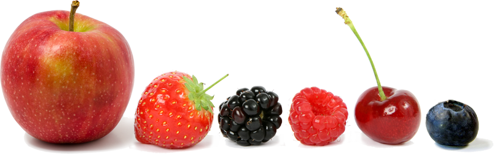

Healthy Food - Fruits
Fruits are just as important as vegetables. They provide you kind of vitamin.
They are tasty, juicy, and most people love it.

As you can see, fruits look delicious and diverse!
Do you now want a plate of fruits?